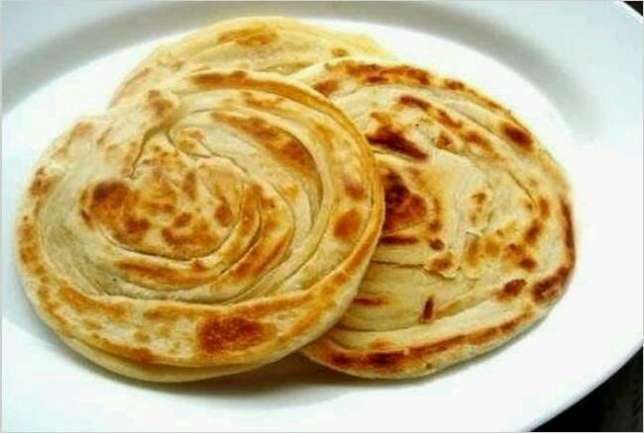
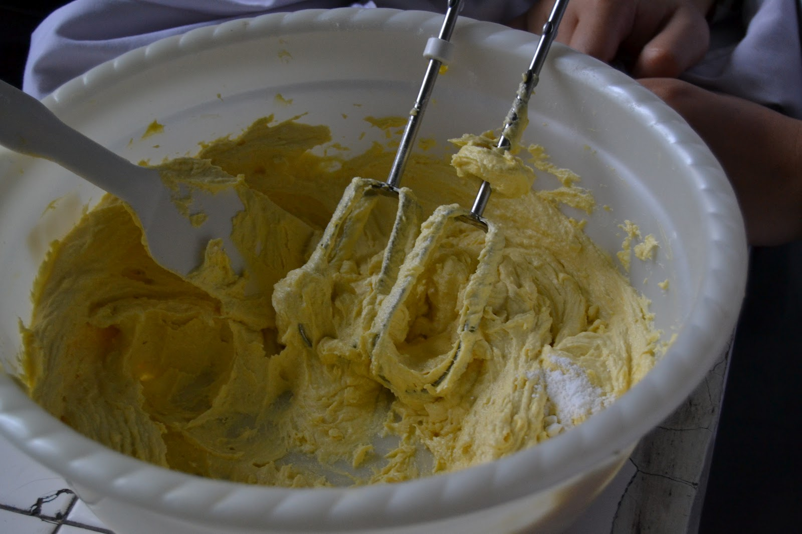
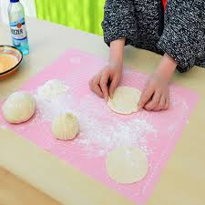
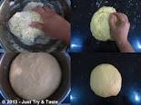

Resep Kue Maryam

Bahan bahan
- 250 gr tepung terigu
- 1 butir telur
- 3 sdm margarin, lelehkan
- 100 ml air hangat
- 2 sdm susu bubuk(optional)
- 1/2 sdt garam
- margarin leleh untuk olesan
- minyak untuk merendam
Langkah langkah
1.Campur semua bahan roti menjadi satu

2.Uleni adonan sampai kalis

3.Kalisnya adonan canai tidak sekalis adonan roti
